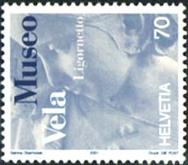
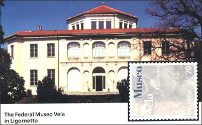
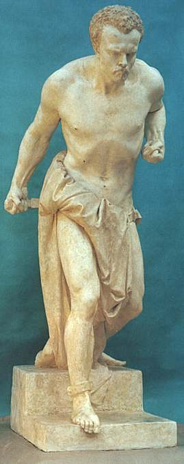
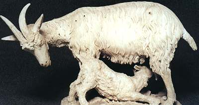

|
|
The Federal Museo Vela
Swiss Sculpture
The villa shown below, on the right, was built for the major Italian sculptor of the 19th century, Vincenzo Vela in 1862. This palazzo and its English-style park is located on a small hill in Ligornetto, a village in the southernmost part of Switzerland, in a canton named Ticino.

Since 1898 this villa, a donation of the artist to the Swiss confederation, shows the works of the artists of the Vela family, as well as pictures, drawings, pastels and water-colors by artist friends of Velas from the neighboring Italy. The museum contains also one of Switzerland's oldest collections of 19th century photographs.

|
 |
The best known member of the family was Vincenzo Vela (1820 - 1891). As artist he reacted to the classicism of Antonio Canova, taking his inspiration from naturalism and creating his own style, known under the term of "verism". Famous throughout Europe, he ranks among the major Italian sculptors of the 19th century. The work "Spartacus", shown on the left, was carried out between 1847 and 1849.  Lorenzo Vela (1812 - 1897), the brother of Voncenzo, made a name for himself as arcihtectural sculptor and Professor of Sculpture at the Brera Academy of Art. The sculpture shown above, Goat with Kid (1843) is displayed in the Vela Museum. Spartaco Vela (1854-1895), was a painter whose work reflects the Italian impressionist style. He was Vincenzo's son and it's he who willed the Ligornetto estate, together with all collections, to the Swiss confederation in 1892. Rediscovered around 1975, the work of Vincenzo Vela has taken a fresh importance in the art history. (After Urs Staub, Federal Office of Culture, Museo Vela. Published in Focus on Stamps, 2/2001). |
Link: Comments (sometimes quite acid) concerning the stamp.